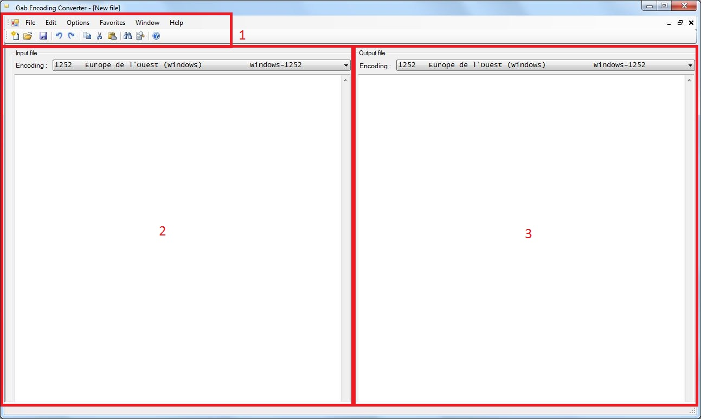

After you clicked the icon of Gab Encoding Converter, the following window appears :
You can see that the interface of Gab Encoding Converter is divided in 3 main parts :
While it could appear not very useful to have a new document opened when you start Gab Encoding Converter, it can actually be of some interest if you copy/paste some text in one of the two panes and change its encoding using the live preview. However the prefered use of Gab Encoding Converter is of course to open an existing file.